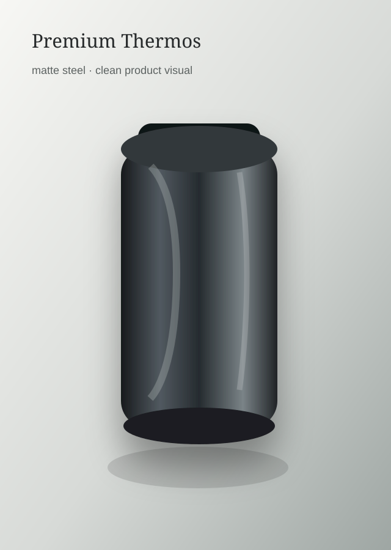
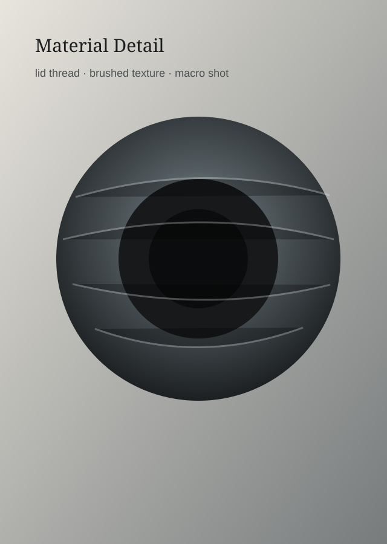
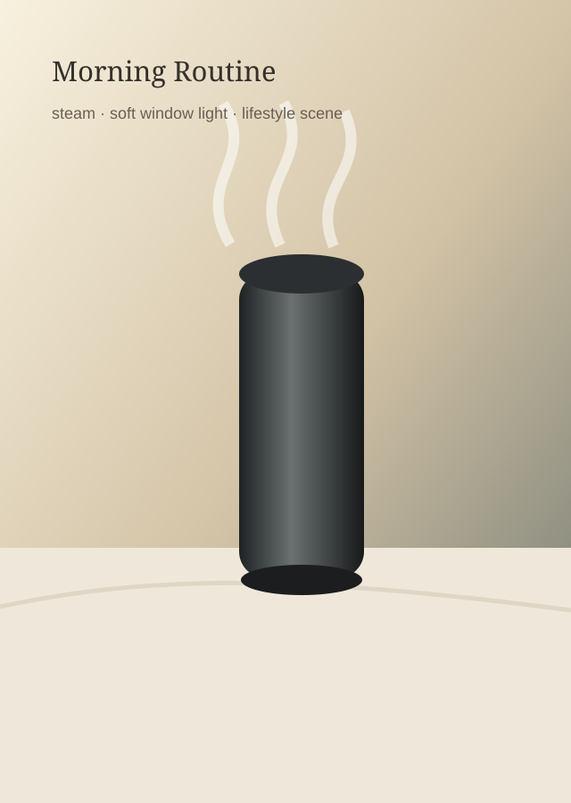
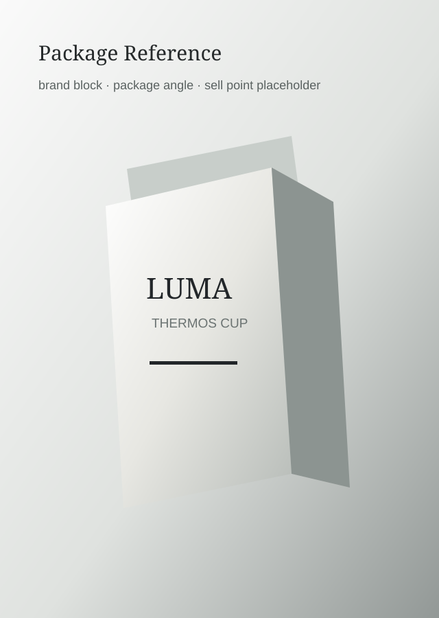

保温杯主图
产品英雄图 · 9:16
本版原型重点展示 Agent v0 在用户侧的主链路：用户如何在 Canvas 中引用素材、如何在 Agent 侧边栏提出需求，Agent 如何追问、总结需求理解，并在确认后直接产出可手动应用的分镜提示词生成卡。
对应 PRD 中的 Agent v0 用户体验流程，以及工程流程图里 Agent 侧边栏承载对话、追问、需求理解总结、生成卡和应用状态提示的用户可见部分。



